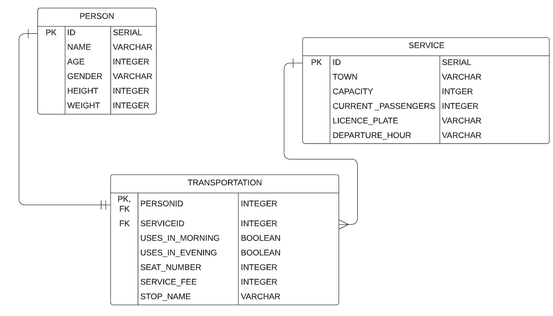

Parts Implemented by Hakan Saraç¶
For EmployeeDB, I have worked on the tables PERSON, SERVICE, TRANSPORTATION and their related functions.
Database Design¶
{kind=link}
The “PERSON” table contains the available person along with their properties like their name, age, gender, height, and weight.
The “SERVICE” table contains the available services for employees along with their properties like its town, capacity, current passenger amount, licence plate and departure hour.
The “TRANSPORTATION” table contains the current transportation information which maps the name of the employee to their services, seat number, service fee, stop name, whether they use it in the morning or evening.
Code¶
Database Functions¶
- def add_employee(self, employee):
adds a new employee returns: employee_key
- def delete_employee(self, employee_key):
deletes an employee
- def update_employee(self, employee_key, name, age, gender, height, weight):
updates an existing employee returns: employee_key
- def get_employee(self, employee_key):
get a single employee by its key returns: employee_
- def get_employees(self):
get all employees and add them to a list returns: employees
- def get_employee_id(self, employee_name):
returns the id of an employee by its given name returns: employee_id
These are the functions about employees, for all CRUD operations as well as getting the employee id for the foreign key operations.
- def add_service(self, service):
adds a new service returns: service_key
- def delete_service(self, service_key):
deletes a service
- def update_service(self, service_key, town, capacity, current_passengers, licence_plate, departure_hour):
updates an existing service returns: service_key
- def get_service(self, service_key):
get a single service by its key returns: service_
- def get_services(self):
get all services and add them to a list returns: services
- def get_service_id(self, service_name):
returns the id of a service by its given name returns: service_id
These are the functions about services, for all CRUD operations as well as getting the service id for the foreign key operations.
- def add_transportation(self, transportation):
adds a new transportation returns: transportation_key
- def delete_transportation(self, transportation_key):
deletes a transportation
- def get_transportation(self, transportation_key):
get a single transportation by its key returns: transportation_
- def get_transportations(self):
get all transportations and add them to a list returns: transportations
- def update_transportation(self, personid, serviceid, uses_in_morning, uses_in_evening, seat_nr, service_fee, stop_name):
updates an existing transportation returns: transportation_key
These are the functions about transportation, for all CRUD operations as well as getting the names of employees and towns of services from their id values from the foreign key operations.
View Functions¶
- def list_page():
lists all the existing employees by calling the get employee function from the Database if user is logged in as admin, they can delete some of the existing employees
- def employee_page(employee_key):
gets only the requested employee by its employee key by calling get employee function from the Database if user is logged in as admin, they can edit the employee
- def employee_add_page():
adds a employee to the database by calling the add employee function from database validates whether the name and age are in appropriate form
- def employee_update_page(employee_key):
updates a employee to the database by calling the update employee function from database validates whether the name and age are in appropriate form
- def list_services():
lists all the existing services by calling the get services function from the Database if user is logged in as admin, they can delete some of the existing services
- def service_page(service_key):
gets only the requested service by its service key by calling get service function from the Database if user is logged in as admin, they can edit the service
- def jobtitle_add_page():
adds a service to the database by calling the add service function from database validates whether the title is in appropriate form
- def jobtitle_update_page(jobtitle_key):
updates a service to the database by calling the add service function from database validates whether the title is in appropriate form
- def list_transportations():
lists all the existing transportations by calling the get transportations function from the Database get_employees and get_service because of the foreign keys if user is logged in as admin, they can delete some of the existing transportations
- def transportation_page(transportation_key):
gets only the requested transportation by its transportation key by calling get transportation function from the Database get_employees and get_service because of the foreign keys if user is logged in as admin, they can edit the transportation
- def transportation_add_page():
adds a transportation to the database by calling the add transportation function from database and get_employees and get_service because of the foreign keys validates whether the salary is in appropriate form
- def transportation_update_page(transportation_key):
updates a transportation to the database by calling the add transportation function from database get_employees and get_service because of the foreign keys validates whether the salary is in appropriate form